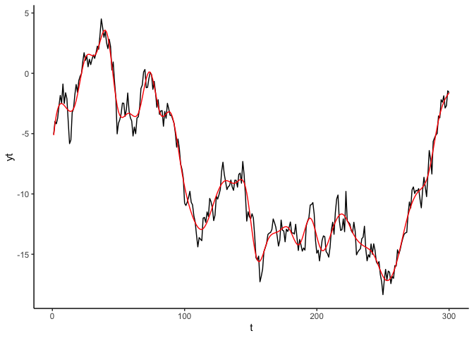
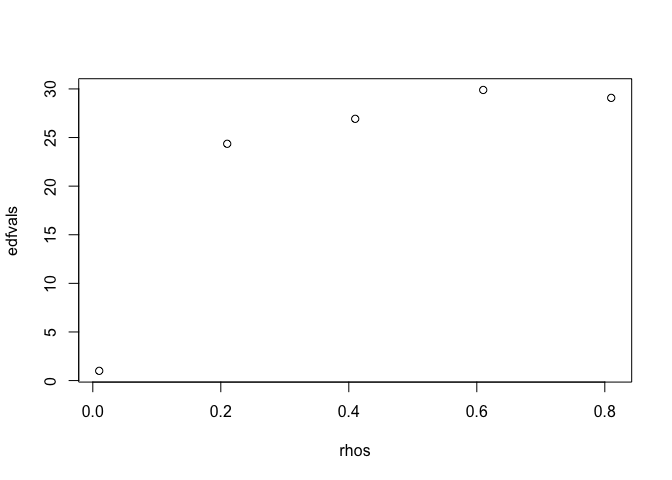
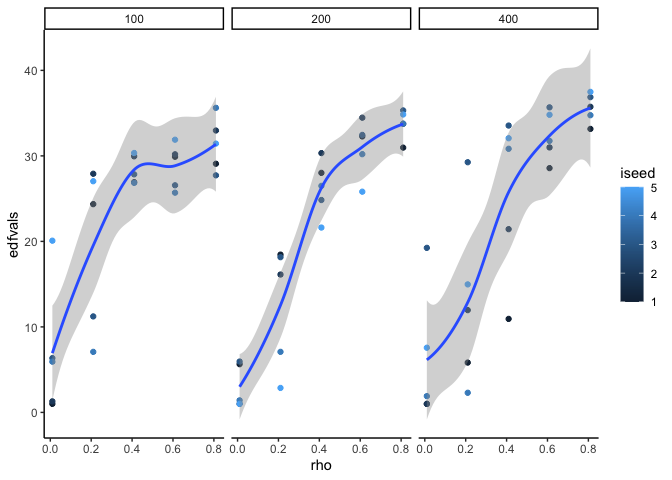
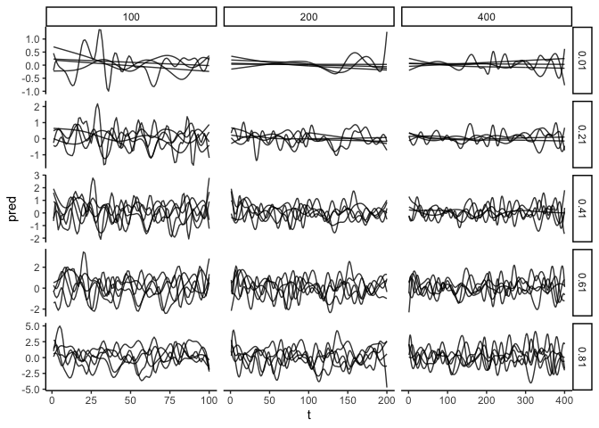

Running R code for all combinations of some parameters with lapply karate
Sometimes we want to run the same bit of code many times for different parameters. Then if we have multiple parameters, we may want to run the code for all combinations of those parameters. I use what I call ‘lapply karate’ to perform this task.
Applications include in simulating data, simulating data and fitting a model to test model fit, conducting sensitivity analyses for models or even making lots of plots.
We’d also like our method to generalize easily to other parameters. So for instance, once we run the model for all combos of parameter A and B, we’d also like to run it for all combos of parameters A and C, without too much more coding.
Options for looping over all combinations of several variables
There are many options for doing this task. Here are some common ones:
for or while loops (but gets unweildy)
Vectorize function (base R) - maybe a bit slow?
Apply family (base R), e.g. lapply, tapply, apply, sapply etc…
purrr package (map and pmap functions)
data.table Probably the fastest?
dplyr Also very fast
mclapply to do same as lapply on multiple threads!
There are different performance considerations with all of above. But for an introduction I find sapply and lapply are the most intuitive*.
- But not that intuitive, so read one, but this code is definitely one to try yourself.
Function to simulate an autoregressive model.
First, let’s setup a case-study simulation. Below code just simulates data from an autoregressive model. Try changing to ar parameter to see what happens:
library(ggplot2)
theme_set(theme_classic())
tmax <- 300
set.seed(42)
yt <- arima.sim(list(order=c(1,0,0), ar=0.99), n=tmax)
t <- 1:tmax
dat <- data.frame(t = t, yt = yt)
ggplot(dat) +
aes(x = t, y = yt) +
geom_line() The higher the
The higher the ar parameter the stronger the deviations in time.
Fitting a model
We’ll use a GAM to fit a spline to the data we just simulated. Part of the GAM output is an EDF (Effective Degrees of Freedom) statistic. Higher values = greater non-linearity. We should see higher values of the EDF when the AR is greater (because then we get more strong non-linear deviations from the mean):
library(mgcv)
## Loading required package: nlme
## This is mgcv 1.8-31. For overview type 'help("mgcv-package")'.
m1 <- gam(yt ~ s(t, bs = "ad"),
data = dat)
dat$pred <- predict(m1)
ggplot(dat) +
aes(x = t, y = yt) +
geom_line() +
geom_line(aes(y = pred), col = "red") Black line shows the data, red line shows the GAM fit. You can see the edf number if you do summary(m1), or we can access the EDF programmatically like this:
sum(m1$edf)-1
## [1] 36.32412lapply karate
Note Pablo García wrote into me after this blog was published. He pointed out that the base R functions mapply and Map are setup to be multivariate equivalents of sapply and lapply. So you may want to look at those as a slightly more intuitive way of performing the below computations.
Step 1: Setup a function
We need to turn code above into a function, so we can run it many times for whatever paramter inputs. Here I will vary the random seed, correlation coef (rho) and timeseries length (tmax).
arima_vary <- function(rho, tmax, iseed){
set.seed(iseed)
yt <- arima.sim(list(order=c(1,0,0), ar=rho), n=tmax)
t <- 1:tmax
dat <- data.frame(t = t, yt = yt)
m1 <- gam(yt ~ s(t, bs = "ad"),
data = dat)
return(sum(m1$edf)-1)
}
arima_vary(0.8, 100, 1)
## [1] 30.21985The function returns the EDF from the fitted GAM
Step 2: Loop over different values of rho
With sapply we can run our model for series of rho values:
rhos <- seq(0.01, 0.99, by = 0.2)
edfvals <- sapply(rhos, arima_vary, tmax = 100, iseed = 1)
plot(rhos, edfvals)
Step 3: Loop over all combinations of rho and iseed and tmax
What about getting the edf for different combinations of the three parameters?
First set-up a dataframe of all combos:
rhos <- seq(0.01, 0.99, by = 0.2)
seeds <- 1:5
tmax_vals <- c(100, 200, 400)
datin <- expand.grid(rho = rhos, iseed = seeds,
tmax = tmax_vals)
nrow(datin)
## [1] 75So we are going to run our simulations 75 times (this can easily get very large, the larger the df, the longer our simulations will take).
i <- 1:nrow(datin)
#one way using sapply
system.time(
datin$edfvals <- with(datin,
sapply(i, function(j){arima_vary(rho[j], tmax[j], iseed[j])})))
## user system elapsed
## 6.929 0.163 7.460If it works, don’t forget the Kiai
HYAH!
Its a good idea to run it for a small number of combos first and check how long it will take.
Another way of doing the same thing using apply:
datin$edfvals <-
apply(datin,1, function(j){
arima_vary(j["rho"], j["tmax"], j["iseed"])
})The above is the same as doing:
#Manual way
arima_vary(datin$rho[1], datin$tmax[1], datin$iseed[1])
arima_vary(datin$rho[2], datin$tmax[2], datin$iseed[2])
arima_vary(datin$rho[3], datin$tmax[3], datin$iseed[3])
#....
arima_vary(datin$rho[nrow(datin)], datin$tmax[nrow(datin)], datin$iseed[nrow(datin)])Now we’ve done all that, and saved it as a dataframe, the easiest way to plot the combinations of parameters is with ggplot:
ggplot(datin) +
aes(x = rho, y = edfvals, color = iseed) +
facet_wrap(~tmax) +
geom_point() +
stat_smooth()
## `geom_smooth()` using method = 'loess' and formula 'y ~ x' We see greater EDF for greater auto-correlation, as expected, also longer timeseries length also increases the EDF.
lapply karate
Now get to lapply. lapply (for list apply) let’s us have more complex output. Here I output a dataframe of predictions, rather than just a single value.
I call it lapply karate, because the trick is how you store the inputs and outputs to the function. If you’re smart, then you can get everything to output as dataframes and then its easy to plot all those simulations with ggplot.
I’ll make a new function first, that outputs the dataframe (and input parameters, which enables me to save them for use later in ggplot)
larima_vary <- function(rho, tmax, iseed){
set.seed(iseed)
yt <- arima.sim(list(order=c(1,0,0), ar=rho), n=tmax)
t <- 1:tmax
dat <- data.frame(t = t, yt = yt)
m1 <- gam(yt ~ s(t, bs = "ad"),
data = dat)
dat$pred <- predict(m1)
dat$tmax <- tmax
dat$rho <- rho
dat$iseed <- iseed
return(dat)
}
datout <- with(datin,
lapply(i, function(j){larima_vary(rho[j], tmax[j], iseed[j])}))Now bind all those dataframes (nested in a list), so we can plot them with ggplot. Below plot shows every GAM fit for each timeseries length (columns) and each correlation coef (rows).
library(dplyr)
##
## Attaching package: 'dplyr'
## The following object is masked from 'package:nlme':
##
## collapse
## The following objects are masked from 'package:stats':
##
## filter, lag
## The following objects are masked from 'package:base':
##
## intersect, setdiff, setequal, union
datplot <- bind_rows(datout)
dim(datplot)
## [1] 17500 6
names(datplot)
## [1] "t" "yt" "pred" "tmax" "rho" "iseed"
ggplot(datplot) +
aes(x = t, y = pred, group = iseed) +
geom_line(alpha = 0.8) +
facet_grid(rho~tmax, scales = "free") HYAH!
Other advanced uses
You can have your function output a list, so with lapply you end up with a list of lists. Then use lapply to extract or plot specific parts of the list for each object. purrr also has some handy functions for wrangling lists.
You can have more complex inputs to you function, like model formulas, then the function will run models with different formulas for all combinations of other inputs.
Check out various packages for parralel computing, to speed things up.